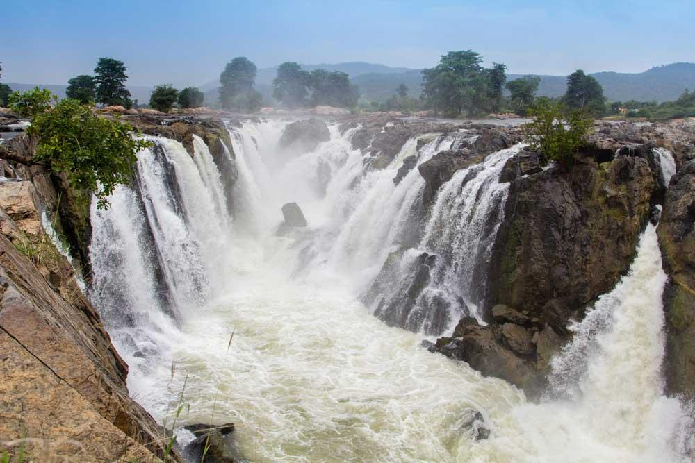
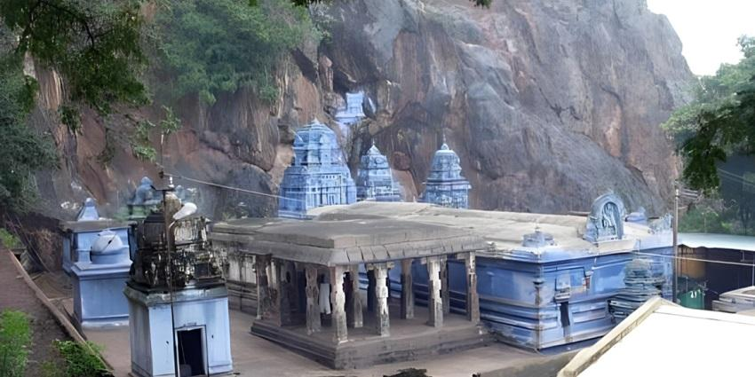
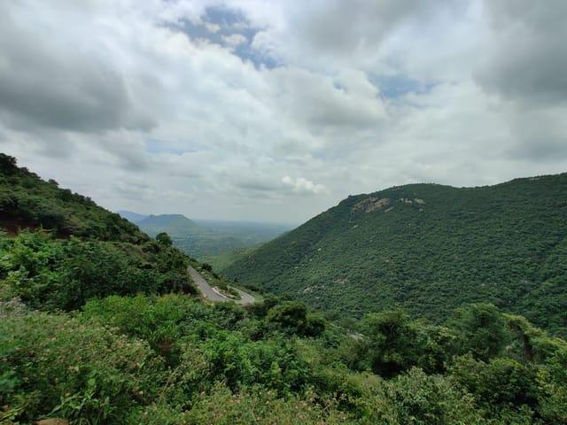
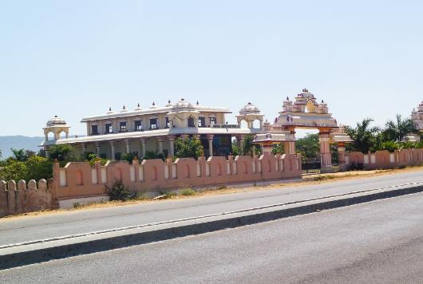
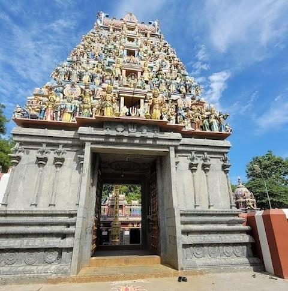
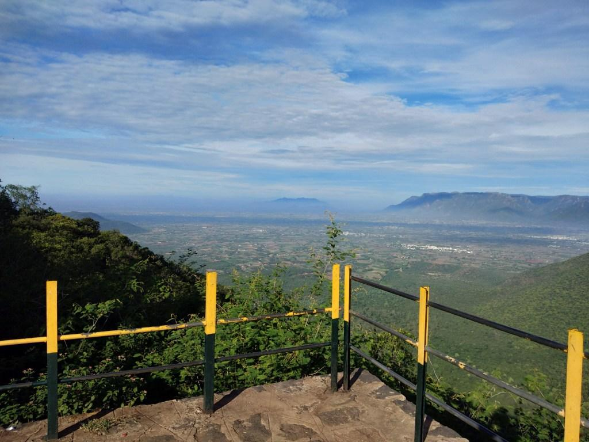

Welcome to Dharmapuri
Discover the natural beauty of Dharmapuri, home to the famous Hogenakkal Falls, Vathalmalai Hills and historic temples. Enjoy comfortable transport, hotels, hospitals and emergency services.
Explore Map
Discover the natural beauty of Dharmapuri, home to the famous Hogenakkal Falls, Vathalmalai Hills and historic temples. Enjoy comfortable transport, hotels, hospitals and emergency services.
Explore Map
Explore the most famous attractions in Dharmapuri.

One of the most famous waterfalls in Tamil Nadu.

A famous hill temple with spiritual significance.

A beautiful hill station in Dharmapuri known for its cool climate, scenic views and trekking.

A historic fort associated with King Adhiyaman, showcasing the rich heritage of Dharmapuri.

An ancient temple in Dharmapuri known for its historical importance and beautiful architecture.

A scenic viewpoint near Hogenakkal offering breathtaking river and hill views.
Easy and convenient transportation across Dharmapuri.
Government and private buses connect Dharmapuri with nearby cities.
Dharmapuri Railway Station provides regular train services.
Local taxis and auto-rickshaws are available throughout the city.
Best hotels to stay during your visit.
Comfortable stay with quality service.
Affordable and convenient accommodation.
Modern hotel with excellent facilities.
Emergency medical services available nearby.
24×7 emergency medical services.
Trusted multi-speciality hospital.
Quality healthcare with experienced doctors.
Dharmapuri
Tamil
Hogenakkal, Vathalmalai & Theerthamalai
Important helpline numbers for your safety.
100
108
101
View Dharmapuri on Google Maps.